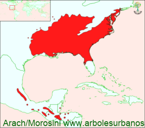

Click en las imágenes para ampliar

{kind=link}
{kind=link}
{kind=link}
- NOMBRE CIENTÍFICO
- Liquidambar styraciflua
- FAMILIA BOTÁNICA
- Hamameliáceas
- DESCRIPCIÓN GENERAL
- Es un árbol de mediano a gran porte entre 20 y 30 metros de altura, aunque hay ejemplares que superan los 40 metros y los 2 metros de diámetro a la altura del pecho. Posee copa de formá cónica o piramidal, auque cuando es madurpo su copa puede ser más extendida. Su corteza es de color grisácea o marrón, cuando es joven incluso tiene apéndices corchosos de manela longitudinal, cuando es madura es gruesa y se presenta fuertemente hendida de manera longitudinal y dividida en placas. Sus hojas son alternas, de forma palmada formada por 5 lóbulos de 10 a 20 cm. de diámetro, de color verde brillante en primavera y verano, luego de colores amarillos rojos y anaranjados en el otoño antes de perderlas en su totalidad.
- FLORES
- las flores están separadas por sexos, pero en la misma planta, aparecen a mediados de octubre y son de color verdoso, formando racimos
- FRUTOS
- maduran a mediados de marzo, son pedunculados y de forma esférica de entre 1.5 a 3 cm. de diámetros formado por hasta 20 cápsulas terminadas en apéndices agudos, dentro de estas se encuentran las semillas (una o dos por cápsula) son pequeñas y aladas.
- ORIGEN
- esta especie es originaria del sudeste de los Estados Unidos desde el delta del Mississippi y península de la Florida, hasta la costa atlántica de los estados de Connecticut; pero también hay poblaciones de esta especie en el sur de México, Belice, Honduras, Guatemala, El Salvador y Nicaragua
- USOS
- En su lugar de origen su madera es muy apreciada, es dura compacta y de duramen color rojizo, utilizada en como madera maciza se la utiliza en estructuras interiores, como leña, se hace también madera laminada para interiores de muebles. Fuera de su área de dispersión natural, es una especie muy utilizada como árbol ornamental
- REPRODUCCIÓN
- PARTICULARIDADES
- su nombre quiere decir ámbar líquido, esto es porque si se lo corta exuda una resina rojiza, denominada Estoraque, la que antiguamente se la utilizaba en perfumería, también tuene utilizaciones medicinales. Las tonalidades otoñales de su follaje de este árbol, más utilizados en jardinería en los jardines de todas las regiones templadas, se recomienda no utilizarlo en lugares con nevadas abundantes, ya que sus ramas son poco resistentes y quebradizas.